Step 1: Pranamasana (Prayer Pose)
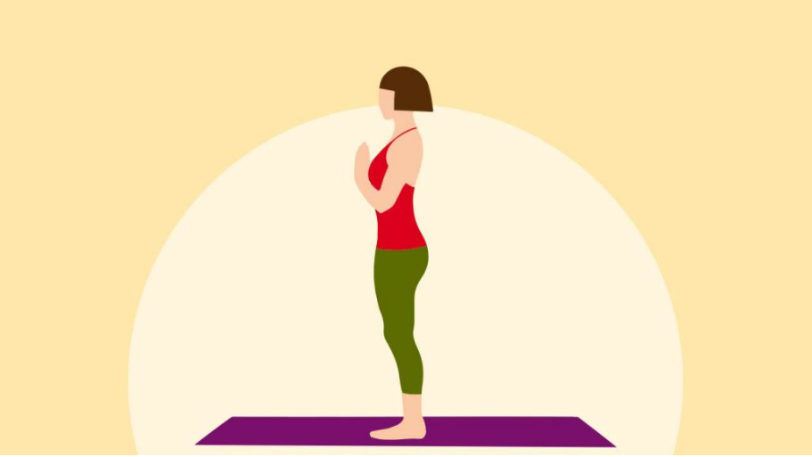Stand at the front of your mat with your feet together, hands in prayer position at your chest.
Step 2: Hasta Uttanasana (Raised Arms Pose)
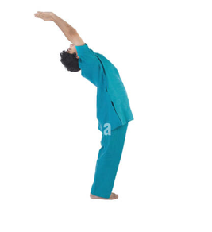Inhale and lift your arms up and arch back, stretching the whole body.
Step 3: Padahastasana (Hand to Foot Pose)
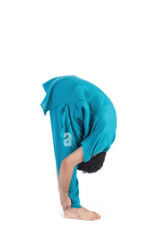Exhale and bend forward, keeping the spine erect. Bring your hands down to the floor beside your feet.
Step 4: Ashwa Sanchalanasana (Equestrian Pose)
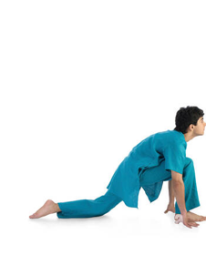Inhale and take your right leg back, keeping the knee on the floor, and look up.
Step 5: Dandasana (Stick Pose)
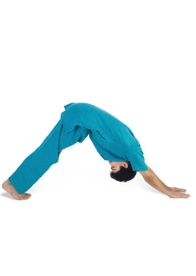Hold the breath and bring your left leg back, keeping the body in a straight line like a plank.
Step 6: Ashtanga Namaskara (Salute with Eight Parts or Points)
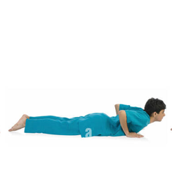Gently bring your knees down to the floor and exhale. Your chin, chest, and knees should touch the floor, while your hips are slightly elevated.
Step 7: Bhujangasana (Cobra Pose)
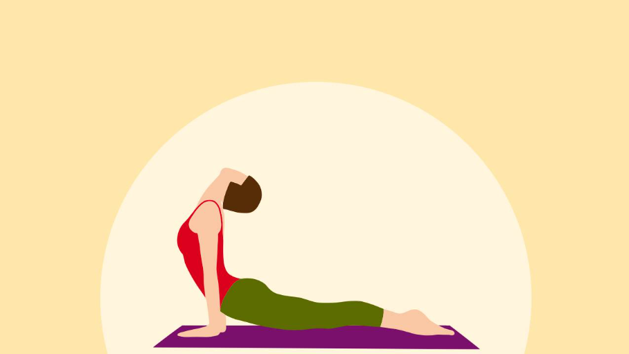Inhale and slide forward, raising the chest and look up, keeping the elbows bent and close to the body.
Step 8: Parvatasana (Mountain Pose)

Exhale and lift the hips and tailbone, pressing your heels into the floor. Form an inverted V-shape with your body.
Step 9: Ashwa Sanchalanasana (Equestrian Pose)
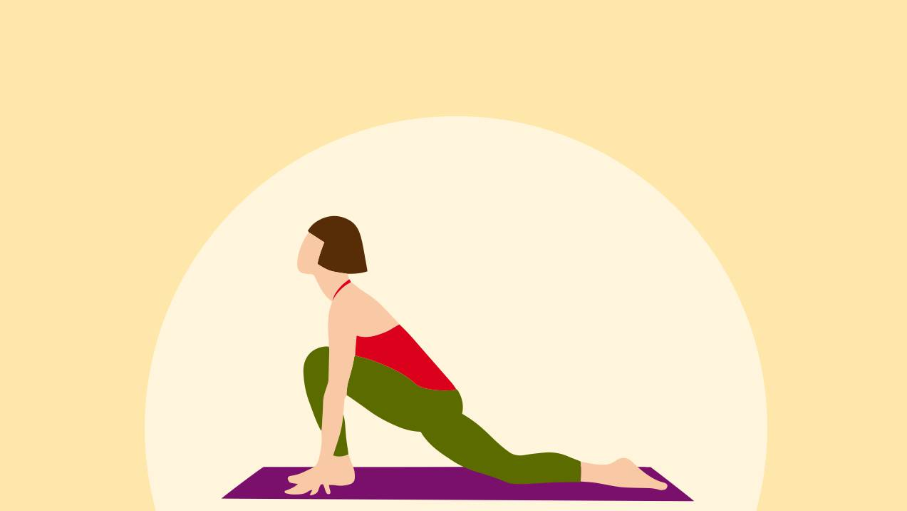Inhale and step the right foot forward between your hands, look up, and keep the left knee on the floor.
Step 10: Padahastasana (Hand to Foot Pose)
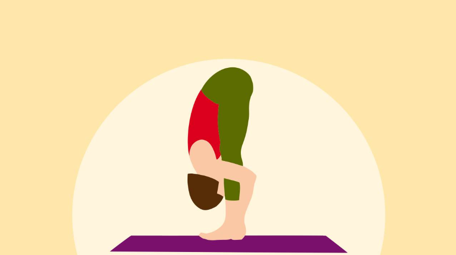Exhale and bring the left foot forward, keeping the palms on the floor, and straighten the legs.
Step 11: Hasta Uttanasana (Raised Arms Pose)
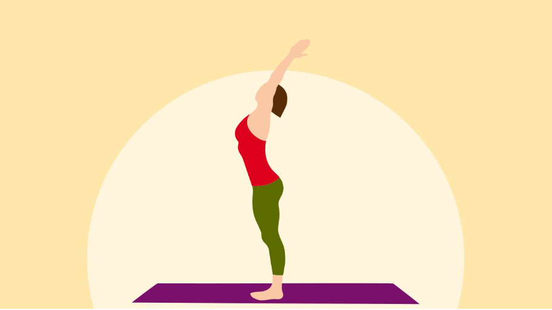Inhale and raise the arms up and back, arching the back and stretching the whole body.
Step 12: Pranamasana (Prayer Pose)
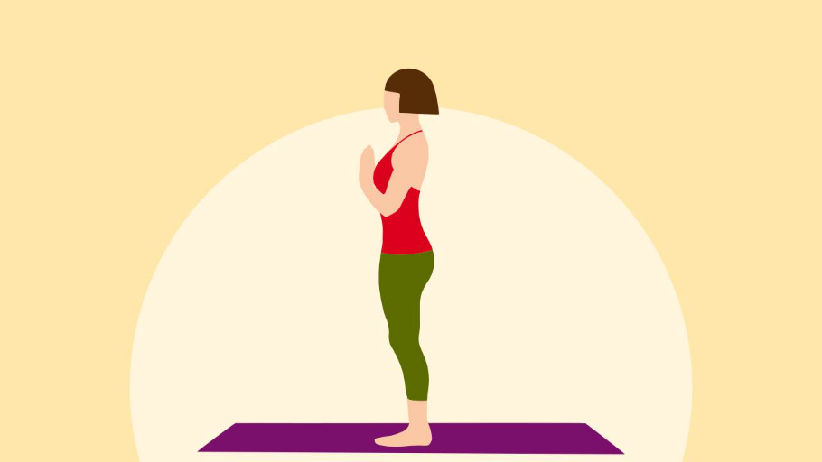Exhale and straighten the body, bringing the arms down to the sides. Return to the prayer position.